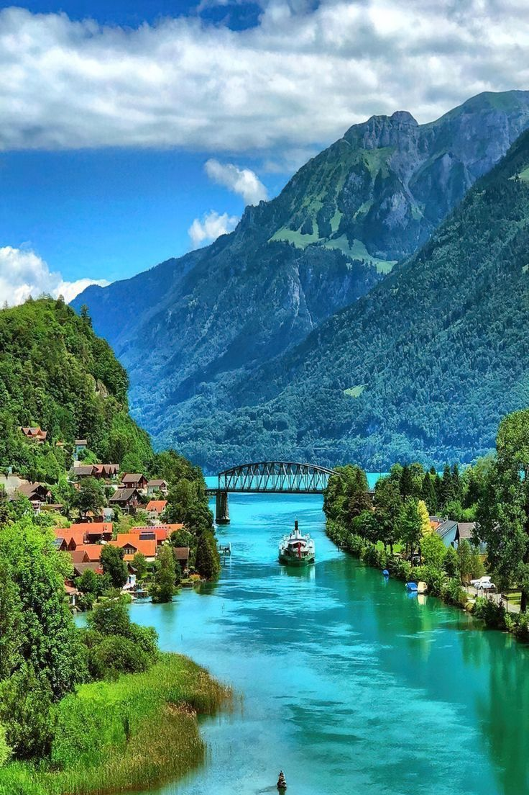
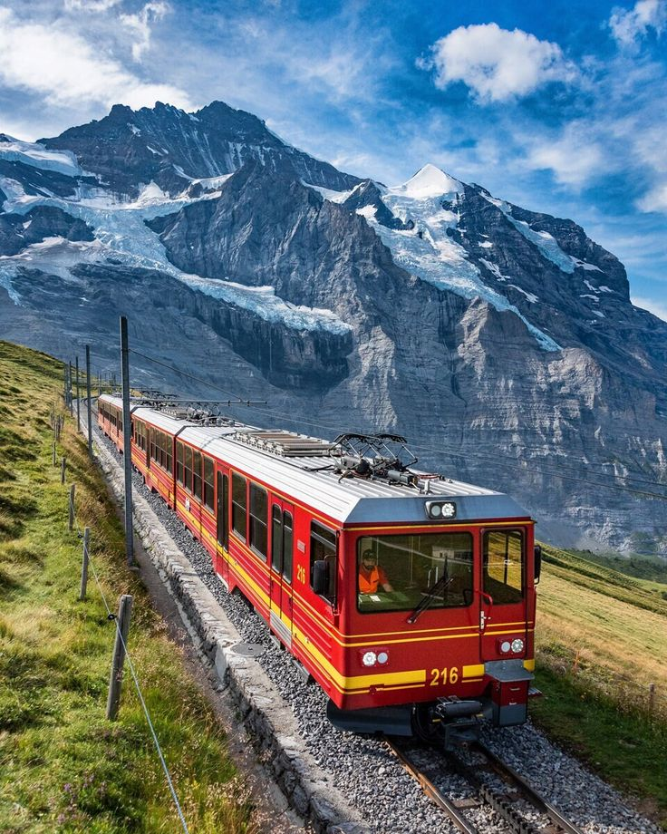
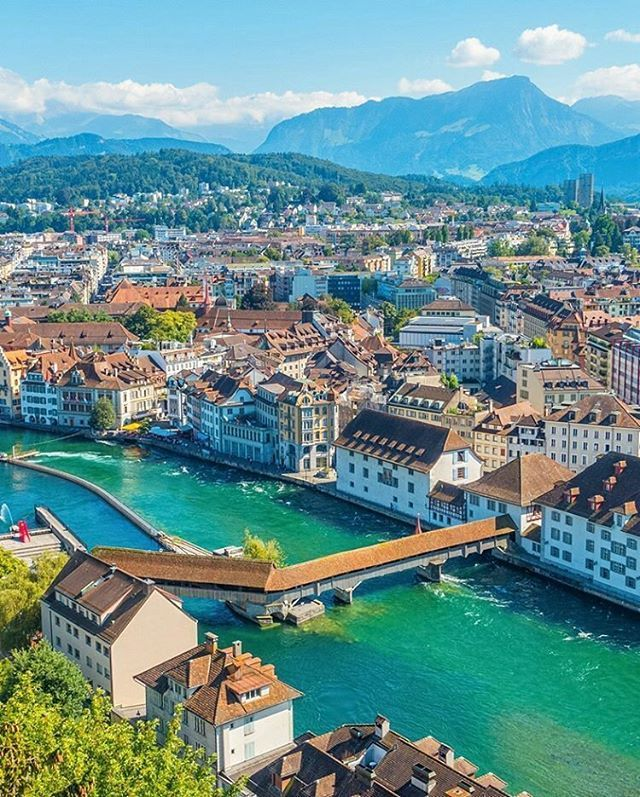

Embárcate en un viaje hacia la tierra de montañas majestuosas y lagos serenos. Suiza te invita a explorar sus paisajes alpinos imponentes,
ciudades encantadoras y la perfección del reloj suizo. Desde las cumbres nevadas hasta los valles llenos de encanto, cada rincón revela una
historia de tradición y sofisticación. ¡Descubre la exquisitez suiza, donde la naturaleza y la elegancia convergen de manera inolvidable!
Suiza en Fotogramas: Un Viaje Visual por los Tesoros Alpinos y Ciudades Encantadoras
Suiza es conocida por sus impresionantes paisajes alpinos, ciudades encantadoras y su reputación de precisión y calidad. Aquí tienes algunos de
los atractivos turísticos más destacados de Suiza.
Zermatt y el Matterhorn
La majestuosa montaña Matterhorn es uno de los iconos más reconocibles del país, y Zermatt es la base perfecta para explorarla.
Interlaken
Situado entre los lagos Thun y Brienz, Interlaken es un paraíso para los amantes de la naturaleza y ofrece vistas espectaculares a los Alpes.

Lago Ginebra
Conocido por su elegancia, el lago Ginebra ofrece paisajes serenos, viñedos y la ciudad de Ginebra con sus museos y organizaciones internacionales.
Jungfraujoch
Conocido como "El Techo de Europa", Jungfraujoch es accesible en tren y ofrece impresionantes vistas de los glaciares y picos alpinos.

Lucerna
Una ciudad a orillas del lago de los Cuatro Cantones, famosa por su puente de la Capilla y su casco antiguo bien conservado.

Alpes suizos
Aparte de Zermatt y Jungfraujoch, los Alpes suizos ofrecen numerosas oportunidades para practicar senderismo, esquí y disfrutar de la belleza natural.
Zúrich
La mayor ciudad de Suiza, conocida por su vibrante escena cultural, compras de lujo y la belleza de su lago.
Bern
La capital suiza, con su casco antiguo medieval declarado Patrimonio de la Humanidad por la UNESCO.